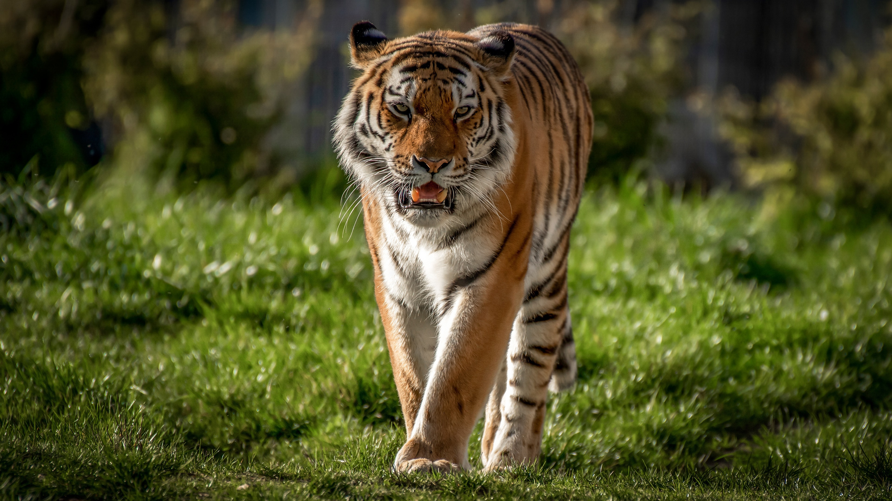
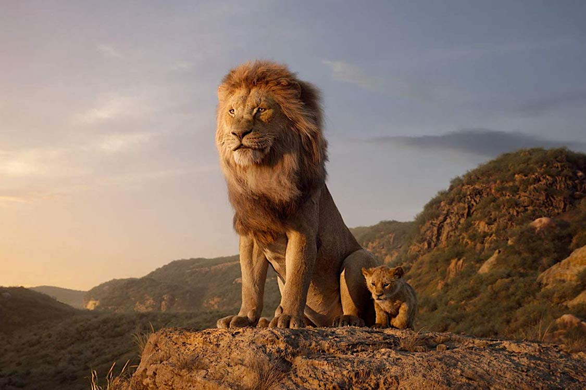

Os felinos são uma família de animais mamíferos da ordem Carnivora.
Dentro dos felinos estão incluidos: gatos domésticos, leões, tigres, leopardos, jaguares, onças, pumas,
panteras,
chitas e outros.
As primeiras evidências fósseis de felinos verdadeiros são de 25 milhões de anos atrás, no período
Oligoceno.
Os primeiros felinos eram os dentes-de-sabre, que faziam parte da subfamília extinta Machairodontinae.
Existem atualmente 41 espécies de felinos.
Apesar das semelhanças superficiais, os também extintos Thylacosmilus e Nimravidae não estão incluídos na
família dos felinos.
Estes são conhecidos pelas suas garras afiadas, cauda longa e pernas fortes, que os ajudam a caçar e se
defenderem.
Eles também são conhecidos pelos seus rostos pontiagudos e olhos brilhantes, bem como pelo seu comportamento
ágil.
